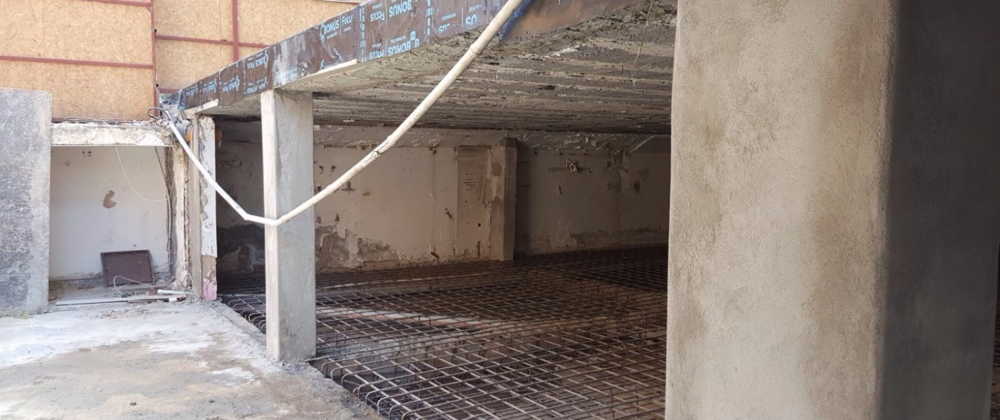

Bina Güçlendirme Yöntemi: Karbon Fiber
Depremler bilindiği üzere meydana getirdiği can ve mal kayıpları yönünden doğal afetler içerisinde en şiddetli olanıdır. Dünyada meydana gelen depremlerde tespit edilen yapı hasarları ve kayıplar; mevcut yapının tasarımının ve inşaat kalitesinin yetersizliğinden, bilgi ve birikim eksikliğinden, yapım hatalarından veya yönetmelik kurallarına uyulmamasından kaynaklandığını göstermektedir. Yaşanan depremler yapıların depreme dayanıklı tasarım ilkelerine ilişkin birikimlerini arttırırken, hasara uğrayan yapıların onarım ihtiyaçlarının varlığını göstermiştir.
Yapı Güçlendirme Yöntemleri
Bir yapının güçlendirilmesi için yapının hasar görmesi gerekmez. Yapının kullanım amacının değişmesiyle düşey yönde etkiyen hareketli yüklerde artışın meydana gelmesi, yönetmeliğin değişmesiyle yapıdaki eski deprem kuvvetlerinin hesap yönteminin yenisine uymaması, yapı elemanlarının ve malzemelerinin kullanım ömrünü doldurması gibi nedenlerden dolayı da yapı güçlendirme gereksinimi duyabilir
Yapının güçlendirilmesi kararı verilmesi durumunda betonarme mantolama ve betonarme perde ilavesi, çelik konstrüksiyon ve CFRP gibi güçlendirme tekniklerinden biri ile yapı güçlendirilir. Biz bu yazımızda karbon elyaf ile betonun güçlendirilmesi yani CFRP yönteminden bahsedeceğiz.

CFRP nedir?
CFRP yada FRP olarak bilinen ‘Carbon Fiber Reinforced Polymers‘; betonarme, yığma, ve ahşap yapı elemanları için dışarıdan uygulamalı güçlendirme sistemidir. Sistem elemanları, karbon lifli dokuma ve epoksi esaslı doyurma reçinesi olarak sayılabir. Betonarme, yığma ve ahşap yapı elemanları için dışarıdan uygulamalı güçlendirme sistemidir. Sistem elemanları : karbon lifli dokuma ve epoksi esaslı doyurma reçinesi olarak sayılabilir
Karbon fiber çeşitlerinden olan karbon elyaf kumaş, gömlek kumaşı kadar ince bir malzeme olup dünyada bilinen en sağlam malzemelerden biridir. Kumaş inceliğinde olan karbon elyaf çelikten 14 kat daha gerilmeye mukavim olmasına rağmen ağırlığı çeliğin beşte biri civarındadır. makasla kesilip duvarlara uygulandıktan sonra bir çelik levha gibi katılaşmaktadır. Karbon lifli polimerlerle güçlendirilen tuğla duvarlar, deprem sırasında yapının ileri geri oynamasını azaltıp rijitliğin artmasını sağlıyor ve böylelikle binanın depremde zarar görme riskini en aza indiriyor. Karbon elyaf tüm yapı elemanlarına dıştan rahatlıkla uygulanan yapısal güçlendirme malzemesidir ve güçlendirilen duvarların dışarıdan sıva veya alçıpan ile kapatılarak normal bir duvar görüntüsüne kavuşturulması da mümkündür.
Kaynak: sanalsantiye.com Fotoğraf